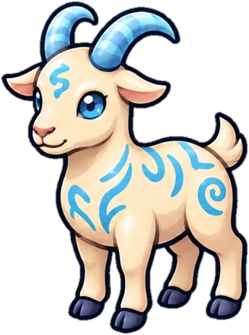

Tap a stage to read its story.
Crystid is a pale cream-coloured goat fawn with soft spiral horns and delicate blue-mineral vein markings tracing its legs and face like a map drawn in chalk. It picks its way across the Amber Desert's cooler gullies in the pre-dawn chill, licking condensation from rocks and hoarding the cold. The mineral patterns shift slightly day by day - field researchers have realized they are reading a slow, ongoing record of every step Crystid has ever taken.
Field note: The mineral-vein map on Crystid's coat has been traced and found to be an accurate topographic map of its birth territory.
Amber Desert. Crystid and its family are found in the Amber Desert. See everyone who lives there.
Share a Bond Food that matches its types to become friends. Crystid loves:
A Bond Food is not a trick. It joins your spirit with the Kimuro's spirit, and only when it chooses you.
Print the Kimuro adventure packs: mazes, cards, a board game and Bond Mark medals.
See the printable packs